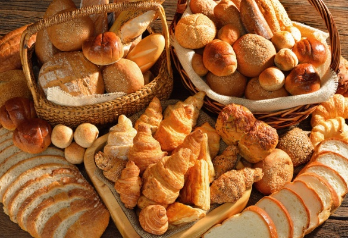
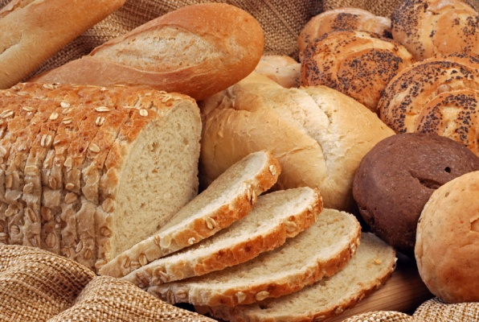
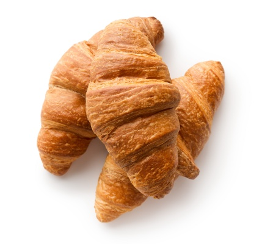
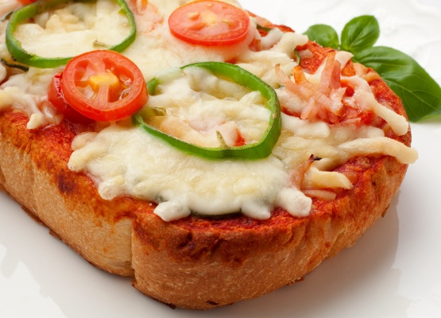
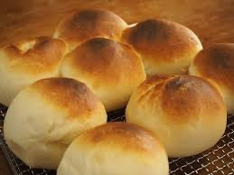
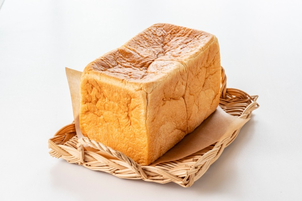
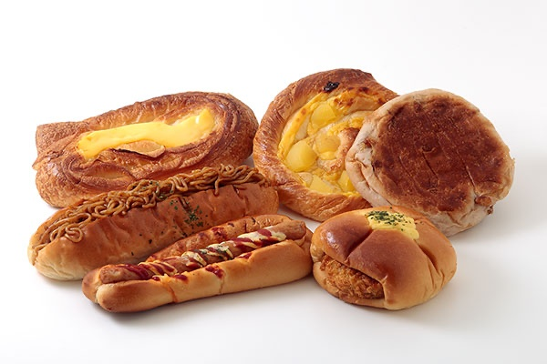

木曾路はすべて山の中である。あるところは岨づたいに行く崖の道であり、あるところは数十間の深さに臨む木曾川の岸であり、あるところは山の尾をめぐる谷の入り口である。一筋の街道はこの深い森林地帯を貫いていた
menu
01
人気商品
木曾路はすべて山の中である。あるところは岨づたいに行く崖の道であり、あるところは数十間の深さに臨む木曾川の岸であり、あるところは山の尾をめぐる谷の入り口である。一筋の街道はこの深い森林地帯を貫いていた
02
バゲット
木曾路はすべて山の中である。あるところは岨づたいに行く崖の道であり、あるところは数十間の深さに臨む木曾川の岸であり、あるところは山の尾をめぐる谷の入り口である。一筋の街道はこの深い森林地帯を貫いていた
03
クロワッサン
木曾路はすべて山の中である。あるところは岨づたいに行く崖の道であり、あるところは数十間の深さに臨む木曾川の岸であり、あるところは山の尾をめぐる谷の入り口である。一筋の街道はこの深い森林地帯を貫いていた
04
惣菜パン
木曾路はすべて山の中である。あるところは岨づたいに行く崖の道であり、あるところは数十間の深さに臨む木曾川の岸であり、あるところは山の尾をめぐる谷の入り口である。一筋の街道はこの深い森林地帯を貫いていた
05
ロールパン
木曾路はすべて山の中である。あるところは岨づたいに行く崖の道であり、あるところは数十間の深さに臨む木曾川の岸であり、あるところは山の尾をめぐる谷の入り口である。一筋の街道はこの深い森林地帯を貫いていた
06
食パン
木曾路はすべて山の中である。あるところは岨づたいに行く崖の道であり、あるところは数十間の深さに臨む木曾川の岸であり、あるところは山の尾をめぐる谷の入り口である。一筋の街道はこの深い森林地帯を貫いていた
07

カスクード
木曾路はすべて山の中である。あるところは岨づたいに行く崖の道であり、あるところは数十間の深さに臨む木曾川の岸であり、あるところは山の尾をめぐる谷の入り口である。一筋の街道はこの深い森林地帯を貫いていた.
08
懐かしパン
木曾路はすべて山の中である。あるところは岨づたいに行く崖の道であり、あるところは数十間の深さに臨む木曾川の岸であり、あるところは山の尾をめぐる谷の入り口である。一筋の街道はこの深い森林地帯を貫いていた
09

天然工房食パン
木曾路はすべて山の中である。あるところは岨づたいに行く崖の道であり、あるところは数十間の深さに臨む木曾川の岸であり、あるところは山の尾をめぐる谷の入り口である。一筋の街道はこの深い森林地帯を貫いていた